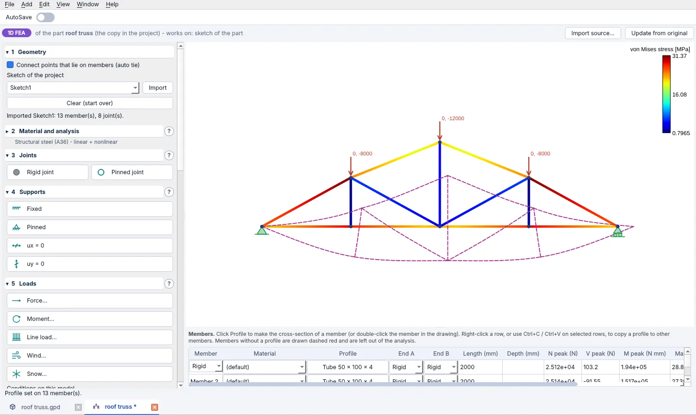
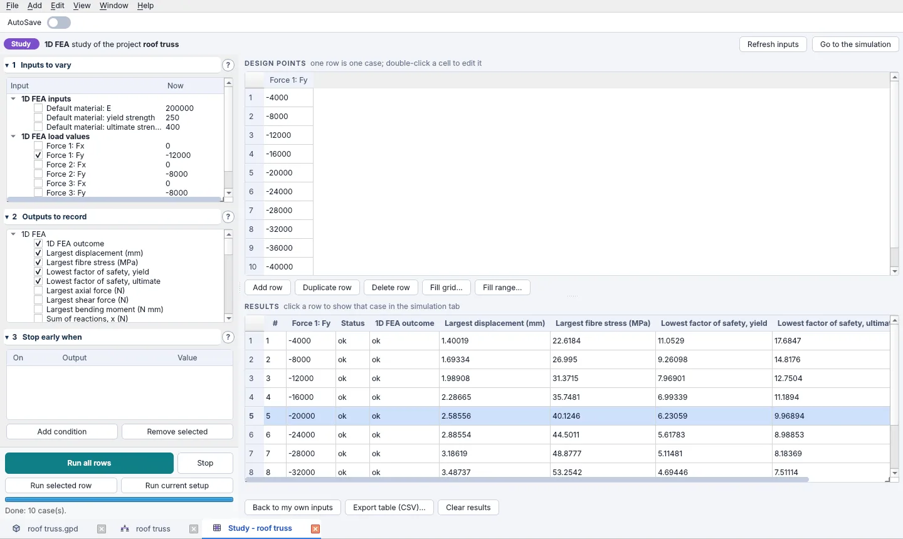

Features
What is in OpenPara today.
Parts
Built in
- 2D sketches with a constraint solver and dimensions
- Extrude, cut, revolve, sweep (including twisted sweeps) and loft, each as a boss or a cut
- Fillet, chamfer, patterns, mirrors, reference planes and axes; right-click a plane or a face to sketch on it
- Named variables (Globals), formulas and configurations
- One program-wide unit system: mm, cm, m, in, ft, N, kN, kip and more
- STEP and STL export, and STEP import
- Add-ons install from File > Add-ons and update on their own

Assemblies
Built in
- Mates, sub-assemblies and patterns
- Variables of their own
- Positions, mate values and pattern spacing can be formulas
Part Generator
Add-on
- Spur, helical, herringbone and internal ring gears with true involute teeth and exact tooth counts
- Size by module, diametral pitch, pitch diameter or outside diameter; optional profile shift, backlash and bore
- Gear trains of up to three gears, sized from centre distances, ratios or tooth counts
- Planetary sets (sun, planets, ring) with valid planet counts and the ratios for each way of holding them
- Each gear opens as its own part. OpenPara gives you the centre distances and turn angles; you build the assembly

Truss Generator
Add-on
- Builds the members of a truss from the lines of a sketch: each member is a profile cut to length with angled ends
- Import a sketch from any open part tab, then change the sketch and refresh to rebuild
- Exports a cut list
- A truss is saved as its own .truss folder, so it is always clear what the members came from
Simulation
Add-on
- 1D FEA for frames and trusses: members with real cross-sections, rigid or pinned joints, supports, point and line loads, wind and snow. It shows displacement, stress, the factor of safety, and the bending moment, shear force and axial force diagrams
- 2D FEA for flat parts in plane stress or plane strain: supports, forces, pressures, bolts and contact, with a linear solver and a nonlinear one that follows yielding
- 2D CFD for the flow around a profile, laminar or with the k-omega SST turbulence model: speed, pressure and vorticity, the forces on the body, and tracer particles
- Each works on a sketch, or on a slice of a part or an assembly, and keeps its own copy of it
- Any result can be saved as an animation (WebP, PNG, GIF or MP4)

Parametric Studies
Add-on
- Works on any simulation project: 1D FEA, 2D FEA or 2D CFD. Start one with File > New Parametric Study, or from the simulation that is on screen
- Tick the inputs to vary: loads, material values, the sizes of a member's cross-section, a dimension of the part
- A table of design points, one row for each case. Fill it by hand, as a range, or as a grid of every combination
- Choose the outputs to record, such as the largest displacement, the largest stress and the factors of safety
- A run can stop early when an output crosses a value you set, and can be stopped by hand; the cases already done are kept
- Click a row of the results to see that case in the simulation tab; export the table as CSV
- The study is saved inside the simulation's project folder

More add-ons
Add-ons
- Annotator: draw boxes on photos and video frames to build an image dataset, and share it as a zip
- Trainer: train a YOLO model on Annotator datasets, in the background
Open source
GPL-3.0
- Read the code, change it, share it
- Built on build123d (OpenCascade), PyQt6, and pyvista / VTK
- All the code is on GitHub
What is checked, and what is not
We would rather tell you than have you find out.
- The gear geometry is checked against textbook values and against the real solids: meshing gears do not overlap, and a deliberately wrong spacing does. That is a geometry check, not a strength or life calculation.
- The simulation tools are 1D and 2D. They are for understanding a design early and comparing options. They do not replace a full 3D analysis, a design-code check or a test.
- OpenPara is young software under active development. Expect rough edges, and please report them.